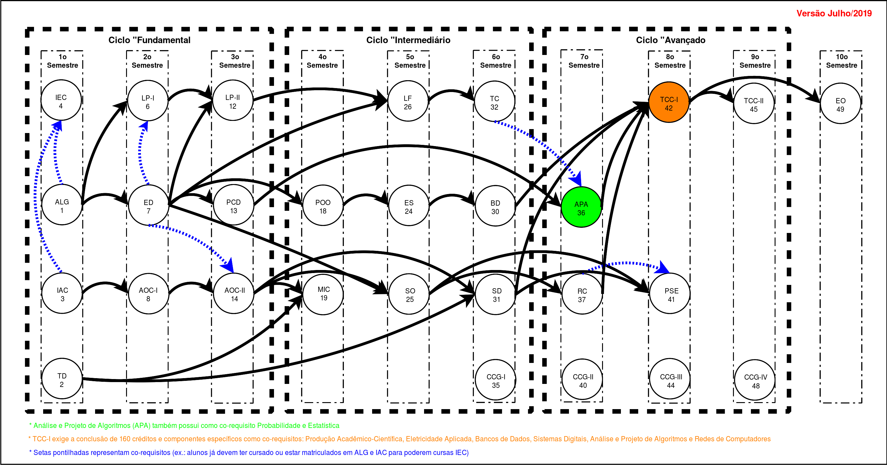

Test page for server
This is a test page to see if the server is working properly.
About HTTP servers
The networking issues are actually fairly trivial. HTTP is essentially a text-based protocol which runs over TCP/IP (though it can run over any transport protocol). The essential network steps are:
- Create a listening socket
- Accept a connection with it
- Fork a child process to service the connection, whilst the parent process goes back to accept more connections.
- Read in the HTTP request
- Send the HTTP response
- Send the entity requested (e.g. an HTML document)
The bulk of the code involves interpreting the HTTP request and sending the HTTP response according to the protocol (though this server is by no means 100% compliant with any HTTP protocol). In order to effectively facilitate communication, HTTP requests and reponses must follow a strict convention.
HTTP requests can be simple or full. A simple request contains one line only, and looks like this:
GET /index.html
A full request can contain more than one line, and a blank line must be sent at the end to signify the end of the request:
GET /index.html HTTP/1.0 Host: www.paulgriffiths.net User-Agent: Lynx/2.8.1rel.2 libwww-FM/2.14 Accept-Encoding: gzip, compress Accept-Language: en <BLANK LINE>
The number of headers following the request line is variable, which is why the blank line is needed to let the server know when they have all been transmitted.
The server must decipher this request, and make an appropriate response. Presuming the above file exists, the HTTP response generated may look like:
HTTP/1.0 200 OK Server: PGWebServ v0.1 Content-Type: text/html <BLANK LINE>
Again, a blank line must be sent to signify where the headers end.
Following the response, the entity (e.g. an HTML document, a JPEG file) is transmitted. Once this is complete, the connection is terminated. With a simple HTTP request, only the entity is sent; no HTTP response is generated.